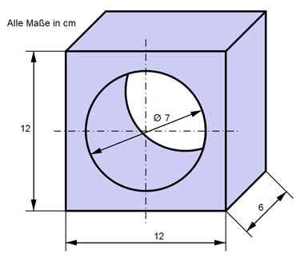
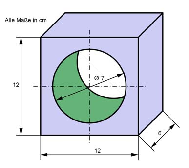

Aufgabe 27 Berechnen Sie das Volumen V des dargestellten Körpers.  V = Quader – Zylinder d = 7 cm --> r = d/2 = 7 cm/2 = 3,5 cm V = a * b * h - π * r² * h V = 12 cm * 12 cm * 6 cm - π * 3,5² * 6 cm V = 864 cm² - 230,8 cm³ = 633,2 cm³  O = blaue Quaderoberfläche - 2 * Kreisfläche + grüne Zylindermantelfläche O = 2 * (12 cm * 12 cm + 12 cm * 6 cm + 12 cm * 6 cm) - 2 * π * 3,5² cm² + 2 * π * 3,5 cm * 6 cm = O = 576 cm² - 76,9 cm² + 131,9 cm² = 631 cm²